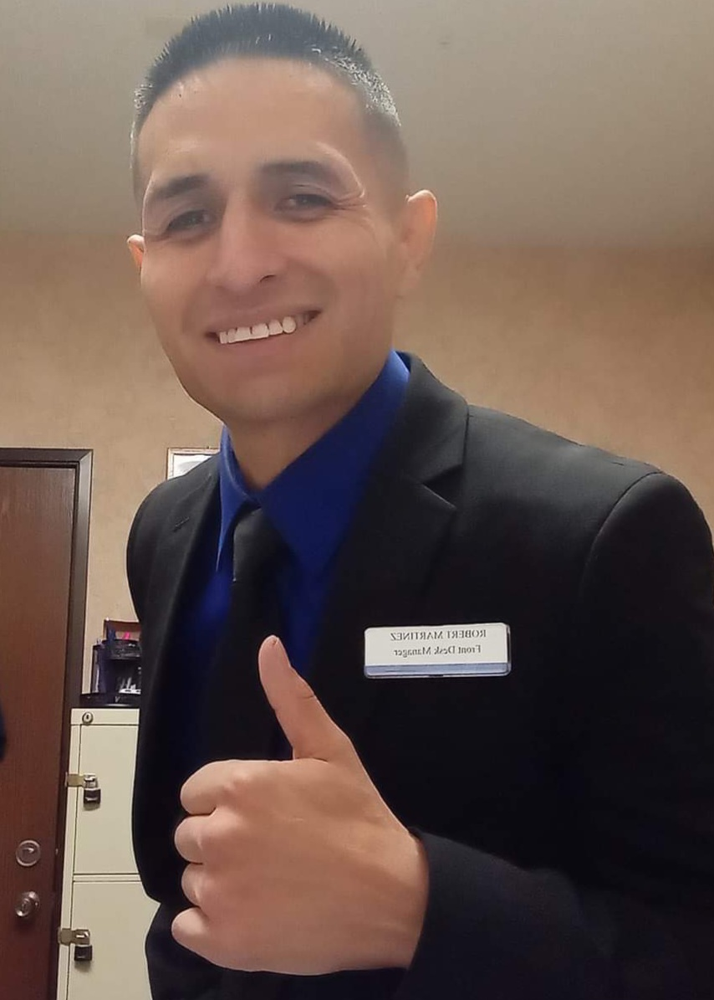
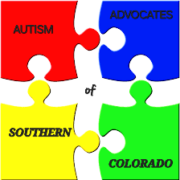

Leaders of Organization
Cheif Executive Officer: Jodi. Martinez-Magallanes
Contact Information
Email: Martinez.jodi@yahoo.com
Phone: (719) 924-4356
Cheif Operating Officer: Robert. James. Martinez
Contact Information
Email: rjramb34@gmail.com
Phone: (719) 250-6306
WHAT WE DO & THE KIND OF SERVICES WE PROVIDE TO BEST FIT YOUR CHILDS NEEDS
We are a well staffed organization with almost 20 years of experience dedicated to supporting individuals with special needs through advocacy, education, and resources. When there is help out there that your child need we are the people you contact that you will be safe with and be sure to get the most that you qualify for in order to enable your child to grow and thrive. We offer several different services such as -MENTORSHIP-PERSONAL CARE-COMMUNITY CONNECTOR-RESPITE and more..... Apply by calling our headquarters and speaking to our Cheif Executive or Cheif Operating Officer during our normal business hours or feel free to contact us via email with the information provided above.We are here to help.